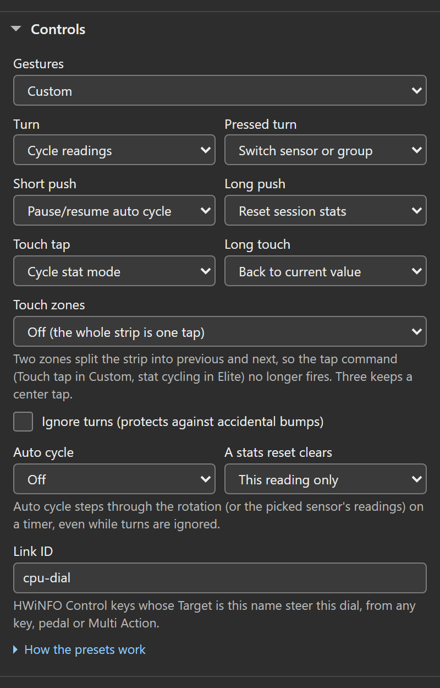
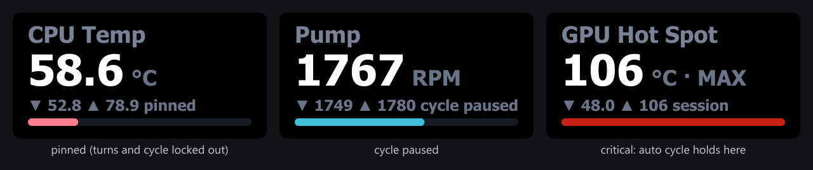
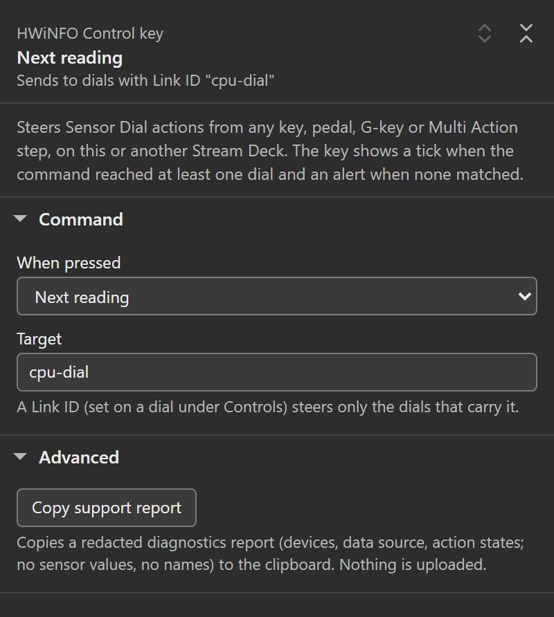

How the dial’s physical inputs map to actions. Everything on this page is configured per dial in the Sensor Dial settings panel. Gestures (the preset, and on Custom one command per gesture), Touch zones, Ignore turns, Auto cycle, A stats reset clears and Link ID live under its Controls section; the rotation and its groups under Reading; thresholds and Auto cycle jumps to a critical reading under Alerts.
Control presets
| Preset | Turn | Pressed turn | Push | Touch tap | Long touch |
|---|---|---|---|---|---|
| Legacy (default) | Cycle readings | Cycle readings | Reset session stats (fires the moment you press) | Cycle stat mode | Back to current |
| Elite | Cycle readings | Switch sensor or rotation group | Short: pause/resume auto cycle. Long (hold half a second): reset session stats | Cycle stat mode, or touch zones | Back to current |
| Custom | Your pick | Your pick | Your pick, short and long separately | Your pick | Your pick |
Nothing remaps until you change it: every dial that existed before presets, and every new dial, runs Legacy, which keeps every earlier release’s gesture map exactly. One 1.1.10.0 fix applies to all presets: rotating to a different reading clears a custom title, so the title can no longer name one reading while showing another’s value. Set Title when the dial moves on to Stays for this dial to keep a fixed title through rotation, as before that fix.
Two Elite details:
- Pressed turn jumps between sensor sources (CPU to GPU to drive), while a plain turn steps through readings. With a rotation set, a pressed turn jumps between the sensors represented in your set. With rotation groups, it jumps between your groups instead.
- A press that saw any rotation executes nothing on release. One physical interaction is one command, always.
The Stream Deck app’s own gesture hints (shown when you hover a dial in the app) follow the preset you picked.
Under Gestures the settings panel lists what each gesture does on this dial now, from the same control map the dial runs, including what other settings change: Ignore turns marks turns as ignored, two touch zones take the tap, and a pause gesture notes when the auto cycle is off. How the presets work at the end of the section spells out Legacy and Elite.
![The dial's settings panel under its header and theme strip, with Controls open and Gestures on Elite: the list of what each gesture does now (Turn cycles readings, Pressed turn switches group, Push pauses or resumes the auto cycle, noting that auto cycle is off, Long push resets session stats, Touch cycles the stat, Long touch returns to the current value), then Touch zones on Off, Ignore turns, Auto cycle on Off, A stats reset clears on This reading only, a Link ID field reading "cpu-dial" and the How the presets work link. Reading, Display, Alerts and Advanced are folded, each naming its current values.](./assets/img/pi-dial-presets.png)
With Custom selected, one select per gesture appears: Turn, Pressed turn, Short push, Long push, Touch tap and Long touch. Touch zones stays below them, as on Elite. Switching from Elite to Custom copies Elite’s map into every gesture you have not set yourself, so “Elite minus the one gesture you want different” is a single change; unset gestures on a dial that went straight to Custom keep their Legacy commands. On Custom the gesture list shows only the gestures another setting changes, because the selects already name the rest.

Rotation groups
Optional, and nothing changes until you build them: split the rotation set into named groups (group 1, group 2, group 3, or the names you type) and the dial gets two speeds. A plain turn stays inside the active group; a pressed turn on Elite (or any gesture set to “Switch sensor or group” on Custom) jumps to the next group, and the dial shows the landing group’s name for a moment where its session stats normally sit.
Build them in the dial’s settings panel. Split into groups under the rotation list turns your current set into group 1 and adds an empty group 2, where new ticks then land. The radio in front of a group (“New ticks land in this group”) marks where ticks land: tick readings in the search above the lists (its label then names that group, for example Readings for group 2) and they join that group. A fresh panel marks the group that holds the reading on the dial. Earlier and Later at a group’s edge move the selected reading into the neighboring group (Alt with an arrow does the same from the list, Alt+Home or Alt+End moves it to either end of its group, and Delete takes it out of the set). A line under the lists says what this dial’s gestures do with the groups, and when no gesture can switch groups (Legacy, or Custom without Switch sensor or group) it says the groups run as one list, with a Change gestures link. Each group has an optional name (“CPU”, “GPU”, “Cooling”); unnamed groups show as “group 2” and so on. Add group appends another and marks it for new ticks. The × on a group removes it and its readings leave the rotation. Merge back into one set flattens everything into a plain rotation set again.
Removing a group that holds readings, and a merge that would drop a group name or fold two or more groups of readings into one, ask for a second press: the first press arms the button, which then says what goes (for example Remove GPU and its 2 readings?), and a quick double click only arms it. An empty group goes at once.
![The rotation split into two named groups, with the search above them labelled Readings for GPU. Overview holds CPU, GPU and Pump, with CPU filled as the one on the dial and selected and the Earlier, Later, Rename and Remove toolbar under it; GPU holds GPU Memory Junction Temperature and GPU Clock, its radio marked so ticks land there, with the dimmed hint "Select one to move, rename or remove it" under it. Each group has a name field and a × button. Below: the note "2 groups. Rotation needs two or more readings in a group to move inside it.", the Add group and Merge back into one set buttons, and the line "New ticks go to the marked group. Turns stay inside a group; a pressed turn jumps to the next group and shows its name."](./assets/img/pi-dial-groups.png)
How groups behave:
- The active group is wherever the current reading lives. Jumping groups moves it, and so do the HWiNFO Control key and an alert interrupt; on a preset that can switch groups (Elite, or Custom with “Switch sensor or group” on a gesture), turn after any of those and you are stepping inside the group you landed in. A group whose readings are all missing (sensor asleep, device gone) is skipped by the jump.
- On those presets, Auto cycle steps inside the active group and the overviews list it. With Auto cycle jumps to a critical reading ticked it still watches every group: a critical reading anywhere in the set pulls the cycle to it, group boundary or not.
- A plain turn honors group boundaries only while the dial has a gesture that can cross them. Legacy has none, so on Legacy a plain turn, Auto cycle and the overviews treat all groups as one flat list, exactly as they always have, and a group jump from the HWiNFO Control key lands but the next notch walks on through the boundary. On Custom, assign “Switch sensor or group” to any gesture and the boundaries engage; assign it nowhere and the dial keeps one flat list, so no group can ever become unreachable.
- The HWiNFO Control key’s “Next/Previous sensor or group” commands honor your groups on every preset.
- A single group behaves like a plain rotation set. A stats reset clears “The whole rotation set” keeps meaning the whole set: every group.
- Older plugin versions read the groups as one flat set (the set is stored alongside the groups), so downgrading loses nothing and the groups apply again after re-updating.
Touch zones
Off by default, and only on Elite and Custom: the Touch zones select appears for those presets, and Legacy always treats the strip as one tap. With Two: left and right switch readings, the left half of the touchscreen steps to the previous reading and the right half to the next, and the tap command no longer fires. With Three: left and right switch, center taps, left and right step and the center keeps the tap command (stat cycling by default). Zone edges sit at exact half or third boundaries of the 200 px touch segment; a tap exactly on a boundary counts as the zone to its right.
Pause, pin, and reset reach
- Pause/resume auto cycle stops the auto cycle until you resume it (resuming waits one full interval before the next step). While an auto cycle is set, the dial shows “cycle paused” where it normally says “session”.
- Pin locks the selection completely: turns, taps, auto cycle and the HWiNFO Control key cannot move the dial off its reading until you unpin. The dial shows “pinned” where it normally says “session”.
- A stats reset clears chooses what a reset clears: This reading only (default), The whole rotation set, or Every dial, everywhere. “Every dial, everywhere” includes dials parked on other pages and profiles, and no default gesture uses it; you have to pick it on purpose.
Pause and pin survive page switches and profile changes for up to 30 minutes off screen (the plugin parks the state of the 64 most recently hidden dials; past either bound a returning dial starts fresh). They also reset when the Stream Deck app restarts.

Session stats are per reading
Each reading keeps local session min/max/average. Ordinary rotation preserves that session. The selected reading, rotation-set members and multi-row view readings accumulate while polling runs; hidden dials can keep collecting within the limits above. With no Sensor Reading key or Sensor Dial visible, polling stops.
Since 1.7, repeated held frames do not count again, and averages are sample-weighted. Missing or non-finite readings, stale or unavailable data, and source, native-unit or type changes reset the affected sessions, and the first live frame after a data gap says so once; a pairing edit resets only a session whose saved key now stands for a different measurement. See session statistics for the full rules.
Thresholds and mixed units
A reading is warning once it crosses Warn at and critical once it crosses Critical at, in the alert direction (at or above the value by default; at or below it with the drop-below checkbox). Warn paints a key’s whole face amber and critical paints it red. A dial keeps its theme: on the single view only the range bar’s fill takes the alert color, and on the overview, which has no bar, the alerting row’s own value takes it.
Warn/critical thresholds and the manual bar range apply only to readings measured in the unit they were configured against. Type a warn value of 80 while a °C reading is selected, and it will never fire on a 3000 RPM fan you rotate to; the alert and the manual bar simply stand down for readings in other units. Edit a threshold and it re-anchors to the unit of the reading on screen at that moment.
Unit scoping starts with the first threshold you edit after updating. Thresholds saved by earlier versions keep their old reach (they apply to whatever the dial shows) until you touch one; guessing which reading an old threshold was meant for would risk silently disabling it.
Alert-aware cycling is opt-in via the Auto cycle jumps to a critical reading setting (Alerts section). Ticked, the auto cycle follows alerts: it never rotates away from a reading that is currently critical (a manual turn releases it), and its next step goes to a critical member of your set instead of the next one in order. Unticked (the default), alerts do not steer the cycle at all; it keeps stepping in order, straight through critical readings.
The HWiNFO Control key action
HWiNFO Control is a key action that drives Sensor Dials remotely: from a pedal, a G-key, a Multi Action step, a Key Logic slot (Stream Deck 7.0+), or a plain key, on any connected device. Pick a command under When pressed (next or previous reading, next or previous sensor or group, cycle the stat or show one stat, pause or resume the auto cycle, pin or unpin, reset session stats) and optionally a Target. The panel’s header restates the choice in words, for example Reset session stats, current reading over Sends to dials with Link ID “cpu”. A reset command reveals A reset clears (The dial’s current reading, The dial’s rotation set, or Every dial, everywhere); the last one ignores the Target, and the header then says it sends to every dial on every Stream Deck.
Targeting is explicit. Give a dial a Link ID (its Controls section) and put the same name in the control key’s Target field; the key then drives only dials with that ID, wherever they live. An empty Target drives every dial. The key shows a tick when the command reached at least one matching dial (a pinned dial still counts as reached), and an alert icon when none matched. One reach limit: the four selection commands (next/previous reading, next/previous sensor or group) need the target dial on screen somewhere, on any connected deck, which is why the sources listed above are other devices or automations, not a key that swaps the dial off screen as you press it. The stat, pause, pin and reset commands also reach a dial parked off screen inside the same 30-minute window that keeps its pause and pin, and the tick means the command matched a dial, not that anything changed on screen. Pause and pin also have one-way commands (Pause auto cycle, Resume auto cycle, Pin reading, Unpin reading), so pressing one again in a Multi Action does not toggle the state back.

Page swipe
Swiping sideways on the touch strip switches Stream Deck pages. The app handles that gesture. Selection and labels are saved settings. Pause, pin and session state can survive a page switch within the hidden-dial limits above; session statistics still follow the reset rules.
Settings migration
Settings only ever gain fields; nothing existing is renamed or removed.
- Dials without a
controlPresetfield run Legacy, exactly as before. - Rotation groups are an optional field; dials without groups behave exactly as before on every preset. The flat rotation set is kept mirrored to the union of all groups, so a downgrade to an older plugin version runs the union as one set and loses nothing.
- The unit anchor for thresholds (
alertUnit) is stamped the first time you edit a threshold after updating, from the reading on screen at that moment; until then thresholds behave exactly as they did. - Title when the dial moves on defaults to the existing behavior: a custom title clears whenever the dial moves on to another reading, by a turn, a press or touch set to step, a Control key or the auto cycle. Picking a reading in the settings panel keeps it. Pick “Stays for this dial” to keep it through rotation.
- The dial’s View (
dialView) and the key’s Readings on this key (keyLayout, labelled Layout before 1.7) are optional fields too (both 1.2.0; the key’striplemarker arrived in 1.4.0). Only their exact markers switch face:overviewandtworowon the dial,dual,tripleandquadon the key. Anything else, including a value a newer version might write, renders the unchanged single face. A dual key also needs a second reading picked, and a triple or quad key at least two of its slots picked; short of that they stay single too. - Per-reading names (
rotationNames, 1.2.0) are another optional field: a map from reading identity to display name, written only by Rename in the dial’s rotation list. Junk entries are ignored one by one, and older plugin versions ignore the field entirely. - The overview’s Row labels field (
overviewLabels, 1.2.0) shortens shared prefixes by default; only the exact value “full” turns that off. Anything else, including future values, keeps the default. - Malformed or unexpected values in any field fall back to the defaults instead of failing; a broken settings blob renders and keeps working.
- The settings panel keeps what it does not understand. Opening a panel writes nothing, and an edit changes only the field you touched: fields, list entries, group and tile metadata, and option values written by a newer version are kept as they were. A stored choice this version does not know shows as Stored value “…” (not in this list, kept) until you pick another.